library(ggplot2)
library(viridis)
library(hrbrthemes)
library(cmdstanr)
library(bayesplot)
library(spatstat)
library(dplyr)
library(tidyr)
source("presence_only_functions.R")
source("surface_functions.R")4 Data generation and Modelling
4.1 Implementation
The previous sections discussed the theoretical and practical aspects of data generation. We now proceed to implement the data generation procedure. We first generate observations at each site and create plots of observed intensities, bias, and counts. We then fit a Poisson Point Process to the generated data.
We create a ring-shaped environment based on two correlated covariates and generate PO points accordingly.
area_D <- 100
k <- 20
sites <- k^2
# Parameter values somewhere around Fithian 2015.
alpha <- -2
beta <- 2
gamma <- -2
delta <- 0.5
params <- list(alpha=alpha, beta=beta, gamma=gamma, delta=delta)
aux_cor <- 0.7
grid_points <- get_sampling_surface_donut(k)
grid_points <- get_bias_surface_correlated(grid_points, aux_cor)[1] "Correlation between X and Z"
[,1] [,2]
[1,] 1.0000000 0.8023105
[2,] 0.8023105 1.0000000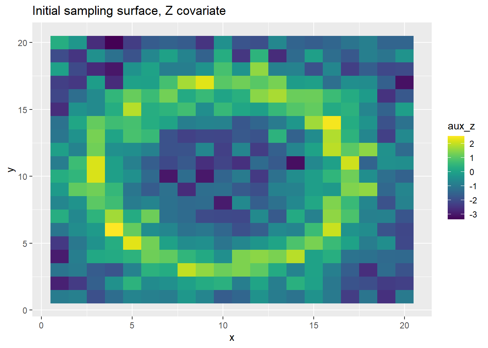
sites <- sites/4
grid_points <- grid_points %>% dplyr::filter(x<(k/2)+1, y<(k/2)+1)
# Filter for only a quarter of the grid.
# If we filter, we need to change the total sites as well
# Need distances for LGCP
distance_mat <- as.matrix(dist(grid_points[,1:2]))
data_reps <- 1
corr_matrix <- specify_corr(grid_points[,1:2])
gp_bool <- F
sim_data <- generate_ppp_data_r(grid_points, params, sites, data_reps, corr_matrix, gp_bool, area_D)
Y_positive_indices <- which(sim_data$Y>0)
stopifnot(sum(sim_data$Y[Y_positive_indices]) == nrow(sim_data$coordinates))
sim_data$Y_coords x y
1 8.258390 3.332577
2 7.833189 3.148193
3 8.791545 2.917487
4 9.514305 2.895499
5 9.786536 2.944210
6 9.915668 2.878715
7 10.252678 2.519817
8 5.760550 4.486816
9 5.872959 3.687775
10 8.483647 3.654805
11 4.954911 4.685162
12 5.447791 5.076430
13 4.688796 5.111808
14 4.814348 4.506965
15 5.414216 4.629568
16 4.874252 4.852133
17 5.069891 4.625479
18 5.684013 5.112741
19 3.704438 6.463203
20 3.856906 6.900197
21 3.320863 8.250520
22 2.619704 9.872064
23 2.585434 9.637625
24 2.516976 10.114937grid_points[Y_positive_indices,] x y aux_x aux_z
28 8 3 1.7474542 0.6322763
29 9 3 2.2578390 1.5628063
30 10 3 2.3263479 2.1853720
36 6 4 1.9218166 0.8553199
38 8 4 0.9405371 2.0969530
45 5 5 2.2578390 1.9171345
46 6 5 1.0796015 2.1914755
54 4 6 1.9218166 1.8609866
64 4 7 1.7189159 1.2644815
73 3 8 1.7474542 1.5964031
93 3 10 2.3263479 1.2653118The above output shows the exact location of the generated points and the associated \(x\) and \(z\) covariate values.
# Use the final generation iteration
p <- ggplot(grid_points, aes(x, y, fill=sim_data$lambda[data_reps,])) +
geom_tile() +
scale_fill_viridis(discrete=FALSE) +
ggtitle("Generated intensity per site")
print(p)
p <- ggplot(grid_points, aes(x, y, fill=sim_data$bias[data_reps,])) +
geom_tile() +
scale_fill_viridis(discrete=FALSE) +
ggtitle("Generated bias per site")
print(p)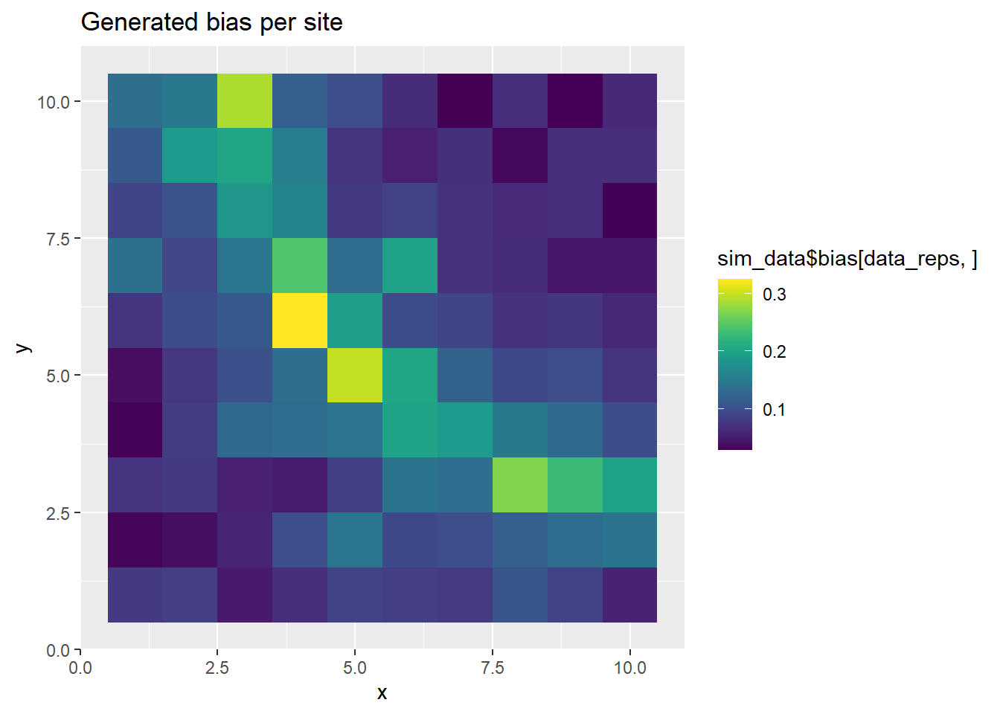
thinned_intensity <- sim_data$lambda[data_reps,]*sim_data$bias[data_reps,]
p <- ggplot() +
geom_tile(grid_points, mapping=aes(x, y, fill=thinned_intensity, width=1, height=1), alpha=.6) +
scale_fill_viridis(discrete=FALSE, name="L*b") +
ggtitle("Generated thinning per site, including generated (or observed) individuals") +
geom_point(data=sim_data$Y_coords, mapping=aes(x=x, y=y), size=3, col="white") +
theme(panel.grid.minor = element_line(colour="white")) +
scale_y_continuous(breaks = seq(0, 20, 1)) +
scale_x_continuous(breaks = seq(0, 20, 1))
print(p)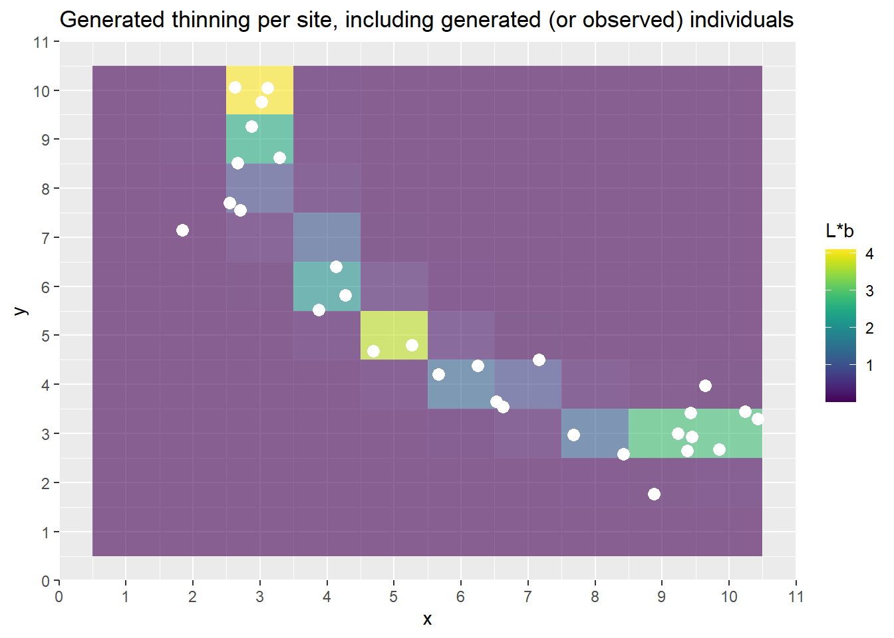
The above plots show the PO points and the ring-shaped surface.
Next we fit the Thinned Nonhomogenous Poisson Process model in Stan. We can make a few observations about this model. First, examine the likelihood: \[L(\lambda|Y) = \prod^{N}_{i=1}\frac{\lambda_i^{n_i}\exp[-\lambda_i]}{n_i!}\]. This is made using the assumption that the counts at sites \(s_i\) are distributed following a poisson process with mean \(\lambda\). This assumption allows for a simpler specification of the likelihood, since we can use the poisson distribution. The setting of \(|A|=1\) allows us to make this assumption, as we do not need to multiple the intensity parameter \(\lambda\) by the area in the model.
The next sections of code fitting and diagnosing the poisson process model in Stan, using the generated data.
model_string <- stan_poisson_process
write(model_string, model_path)
# data_reps is 1 here so just use the first index
data = list(N = sites, X = grid_points$aux_x, Z = grid_points$aux_z, y = sim_data$Y[data_reps,])
model <- cmdstan_model(model_path)
fit <- model$sample(data=data, seed=13, chains=3, iter_sampling=2000, iter_warmup=200)The above code fits the table. We next examine the fit.
fit$summary(variables=c('alpha', 'beta', 'gamma', 'delta'))# A tibble: 4 × 10
variable mean median sd mad q5 q95 rhat ess_bulk ess_tail
<chr> <dbl> <dbl> <dbl> <dbl> <dbl> <dbl> <dbl> <dbl> <dbl>
1 alpha -2.17 -2.14 7.25 7.29 -14.2 9.69 1.00 2108. 2446.
2 beta 2.18 2.15 0.531 0.525 1.37 3.09 1.00 2190. 2046.
3 gamma -2.60 -2.62 7.24 7.32 -14.4 9.46 1.00 2120. 2405.
4 delta 0.531 0.531 0.485 0.475 -0.272 1.33 1.00 2781. 2919.From the table above, we can observe that the parameters \(\beta\) and \(\delta\) have been recovered. However, due to the correlation of \(\alpha\) and \(\gamma\), only the sum \(\alpha+\gamma\) can be correctly identified. Our “true” sum of was equal to -4, and we can see the estimate here is \(~4.7\), which is reasonable given we incorporate priors and are estimating correlated parameters. The correlation between the two can be observed in the scatter plots below, as well as in the wide confidence interval of the posterior, relative to the other parameters.
4.2 Diagnostics
Here we check goodness of fit and Posterior Predictive Checks.
param_vec <- c('alpha', 'gamma', 'beta', 'delta')
posterior <- fit$draws(variables=param_vec)
color_scheme_set("mix-blue-pink")
p_trace <- mcmc_trace(posterior, pars = c("alpha", "beta", "gamma", "delta"),
facet_args = list(nrow = 2, labeller = label_parsed))
print(p_trace + facet_text(size = 15))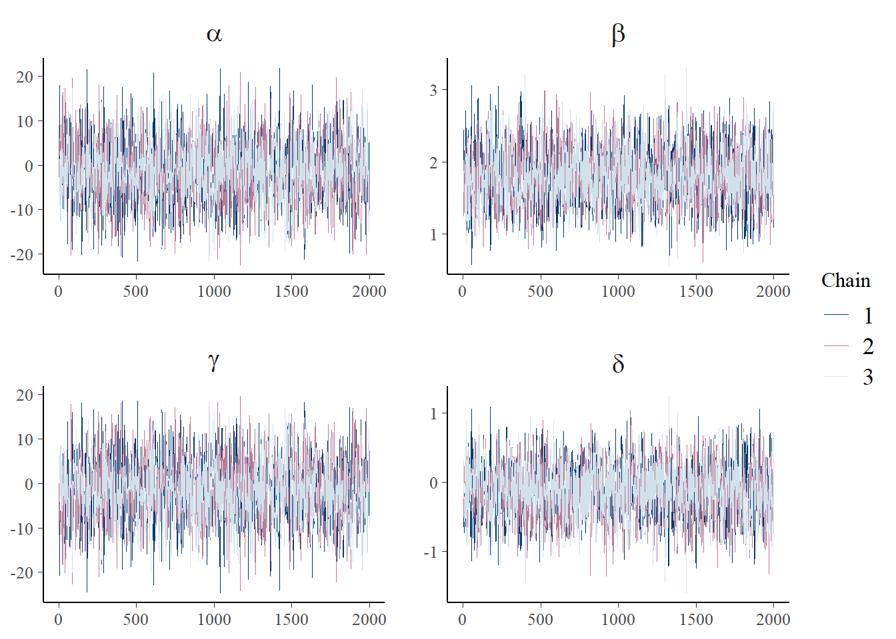
plot_title <- ggtitle(paste("Posterior distributions, with means and 90% interval"))
p_post <- mcmc_areas(posterior, prob = 0.9, point_est="mean", regex_pars = c("alpha", "beta")) + plot_title
print(p_post)plot_title <- ggtitle(paste("Posterior distributions, with means and 90% interval"))
p_post <- mcmc_areas(posterior, prob = 0.9, point_est="mean", regex_pars = c("gamma", "delta")) + plot_title
print(p_post)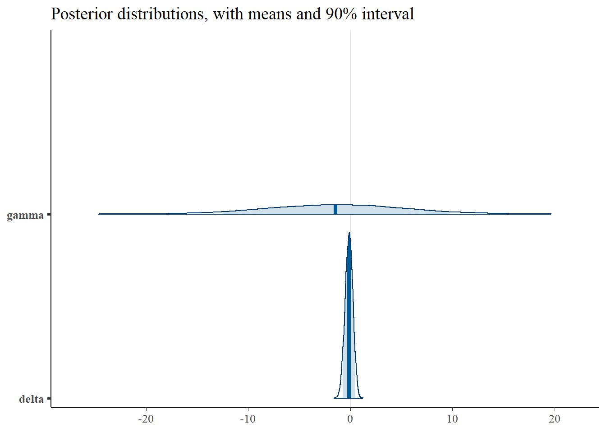
mcmc_intervals(posterior)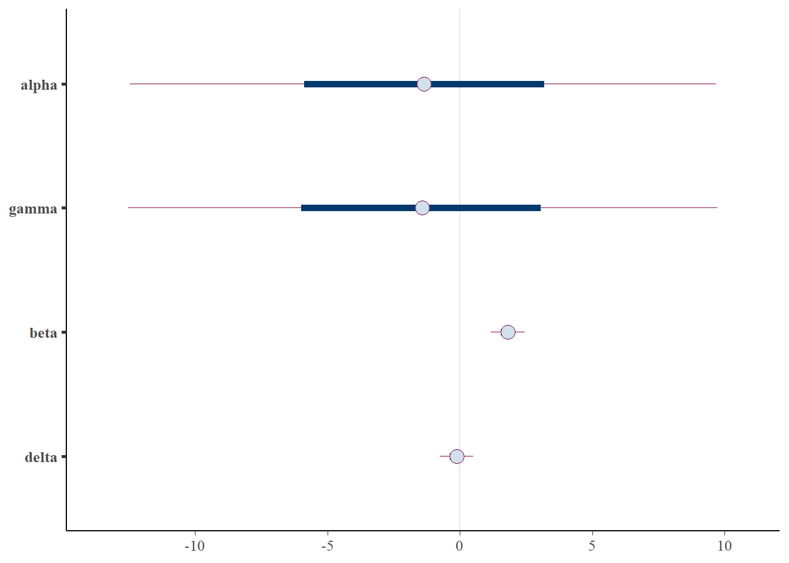
Importantly, note the wide credible intervals on \(\alpha\) and \(\gamma\). Why? See the scatter plots below.
plot_title <- ggtitle("Parameter posterior sample correlation")
p_post <- mcmc_pairs(posterior)
print(p_post)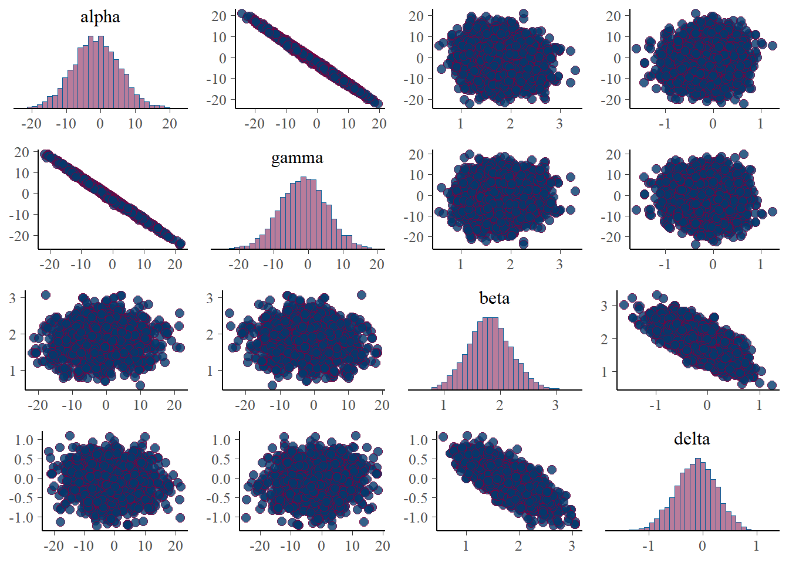
mcmc_scatter(posterior, pars=c('alpha','gamma'))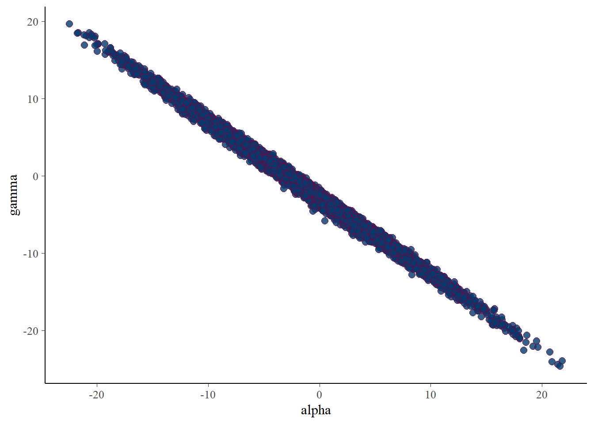
There is near perfect correlation between \(\alpha\) and \(\gamma\), as expected.
4.3 PPD
We next look at the Posterior Predictive Distribution (PPD) of the observations per site. That is, we plot the generated counts \(Y_i\) for site \(s_i\) on the sampling surface (grid).
The PPD can be expressed as the samples from the predictive distribution of \(Y\) taking into account the uncertainty surrounding the parameters. The PPD can be written as \[ p(\tilde{y}|Y) = \int p(\tilde{y}|\lambda, b, Y)p(\lambda, b|Y) dbd\lambda \]
such that the posterior uncertainty of the parameters is integrated out.
Below we plot the generated values of \(\tilde{y}\) for each site. Additionally, the generated quantities of intensity, bias, and intensity*bias ($b) per site are also plotted on the grid.
generated_vars <- c('lambda_bias', 'lambda_rep', 'b_rep', 'y_rep')
lambda_thinned <- fit$summary(variables=generated_vars[1])$mean
lambda_rep <- fit$summary(variables=generated_vars[2])$mean
bias_rep <- fit$summary(variables=generated_vars[3])$mean
y_ppd <- fit$summary(variables=generated_vars[4])$mean
ppd_df <- data.frame(x=grid_points$x, y=grid_points$y, y_rep=y_ppd, lt=lambda_thinned, l=lambda_rep, b=bias_rep)
head(ppd_df) x y y_rep lt l b
1 1 1 0.0001666667 0.0001061064 102820.3 21585593
2 2 1 0.0003333333 0.0001528351 103043.7 35728680
3 3 1 0.0000000000 0.0001128499 105438.8 23011573
4 4 1 0.0000000000 0.0001368138 120331.3 25256336
5 5 1 0.0003333333 0.0002704044 174789.5 38080322
6 6 1 0.0005000000 0.0004130472 303863.0 31781388It is important to notice that while the thinned intensity is ostensibly realistic in estimation, the intensity and bias are not. This is due to the specification of the Thinned Poisson Process \[\lambda^* = \lambda(s)b(s)\] such that \[\lambda^* = \exp\left[\alpha + \beta*X(s) + \gamma + \delta*Z(s)\right]\]
We can then see the generated data in the sampling surface:
p <- ggplot(ppd_df, aes(x, y, fill=y_rep)) +
geom_tile() +
scale_fill_viridis(discrete=FALSE) +
ggtitle("PPD counts per site")
print(p)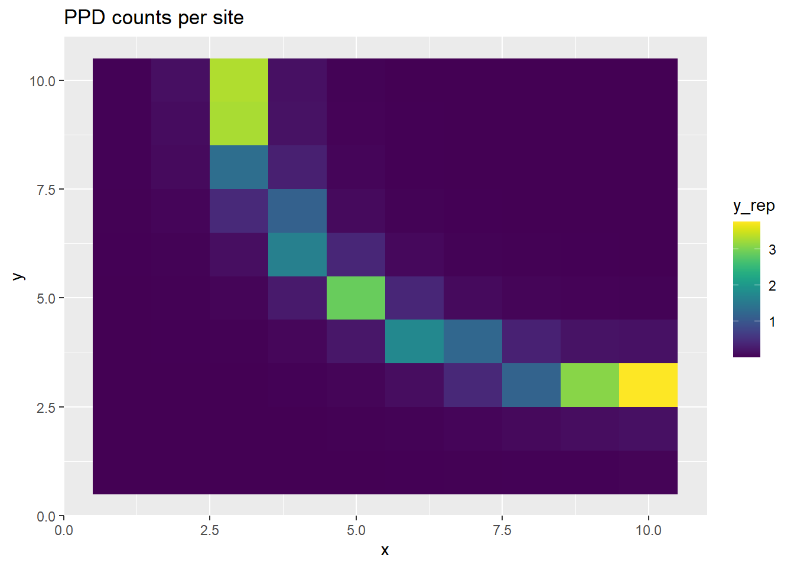
p <- ggplot(ppd_df, aes(x, y, fill=lt)) +
geom_tile() +
scale_fill_viridis(discrete=FALSE) +
ggtitle("Thinned intensity per site")
print(p)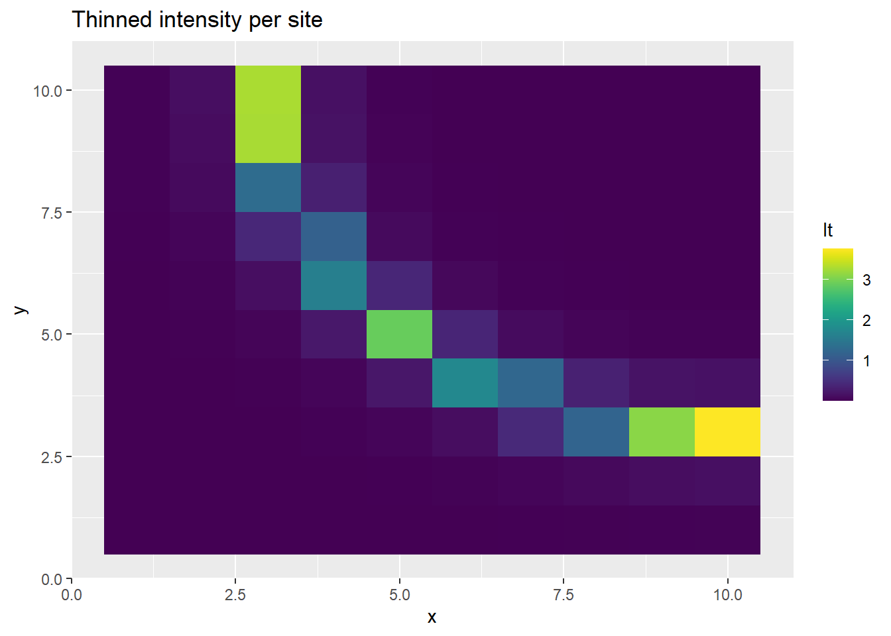
p <- ggplot(ppd_df, aes(x, y, fill=l)) +
geom_tile() +
scale_fill_viridis(discrete=FALSE) +
ggtitle("Intensity per site")
print(p)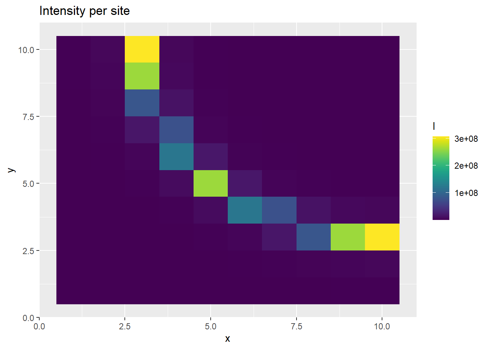
p <- ggplot(ppd_df, aes(x, y, fill=b)) +
geom_tile() +
scale_fill_viridis(discrete=FALSE) +
ggtitle("Bias per site")
print(p)The prediction of PO observatiosn at each site is realistic, as is the thinned intensity. But alone, the intensity and bias predictive disitributions are poorly estimated.
4.4 Correlation between coefficients
In the above plots, it seems that the bias and unthinned intensity are behaving strangely, even though the thinned intensity is generated as we would expect. This is a manifestation of the completely correlated parameters describing the behavior of the intensity and the bias. We can notice that the generated bias and intensity alone are both really large. The issue with the large values appears this way because we are taking the mean of the posterior distribution as our point estimate and showing that in the plot of the sites above. However, when we generate the thinned intensity, we multiply each draw from the posterior predictive chain together. So even though the mean of the posterior chain is high, the individual draws of the bias and intensity inversely fluctuate around each other, due the high correlation between the two parameters.
We take a look at the posterior intervals of the estimates to get a little better idea of this.
plot_title <- ggtitle(paste("Posterior distributions, with means and 90% interval"))
p_post <- mcmc_intervals(fit$draws(), prob = 0.9, point_est="mean", regex_pars = generated_vars[1]) + plot_title
print(p_post)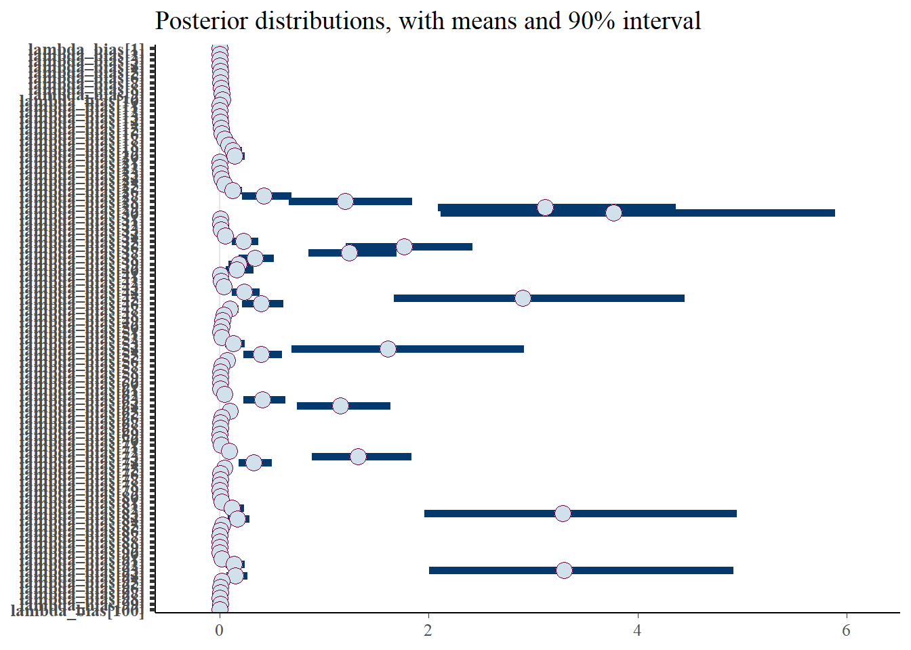
The intervals shown above are for the thinned bias. These are relatively reasonable, as stated.
p_post <- mcmc_intervals(fit$draws(), prob = 0.9, point_est="mean", regex_pars = generated_vars[2]) + plot_title
print(p_post)Warning: Removed 41 rows containing missing values (`geom_point()`).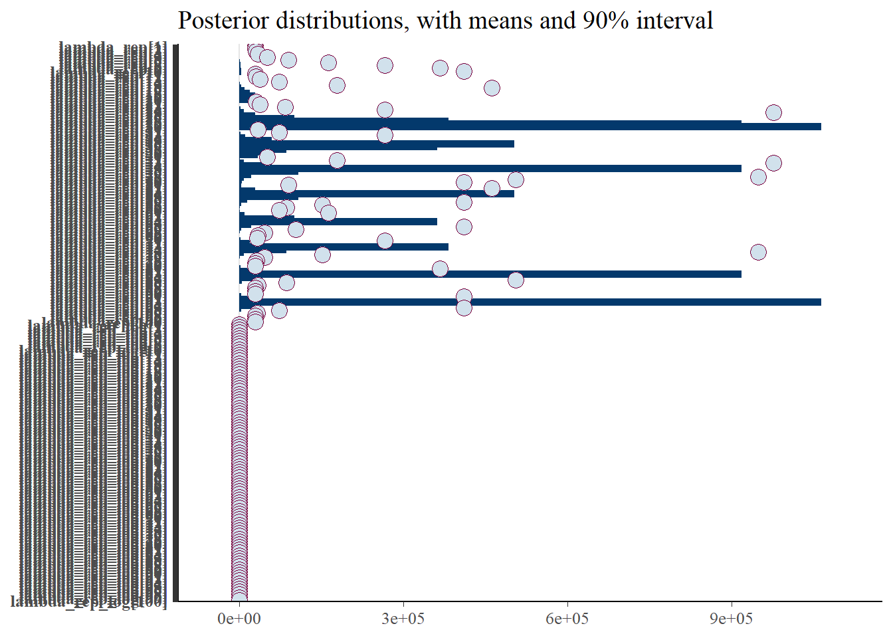
However, the intervals for the intensity (unthinned) are unrealistic, due to the unindentifiable parameters.
p_post <- mcmc_intervals(fit$draws(), prob = 0.9, point_est="mean", regex_pars = generated_vars[3]) + plot_title
print(p_post)Warning: Removed 100 rows containing missing values (`geom_point()`).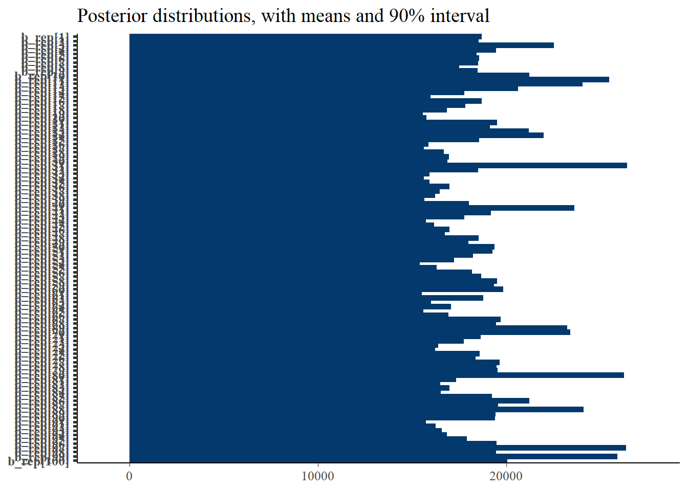
And finally, the intervals of the generated bias is also not correct.
Then we look at the intervals and histograms of the posterior chains for just a few chains.
# The gen parameters for just a few of the sites
gen_lambda <- c('lambda_rep[1]', 'lambda_rep[10]', 'lambda_rep[20]')
gen_lb <- c('lambda_bias[1]', 'lambda_bias[10]', 'lambda_bias[20]')
gen_b <- c('b_rep[1]', 'b_rep[10]', 'b_rep[20]')
p_post <- mcmc_intervals(fit$draws(), prob = 0.9, point_est="mean", pars = gen_lambda) + plot_title
print(p_post)Warning: Removed 3 rows containing missing values (`geom_point()`).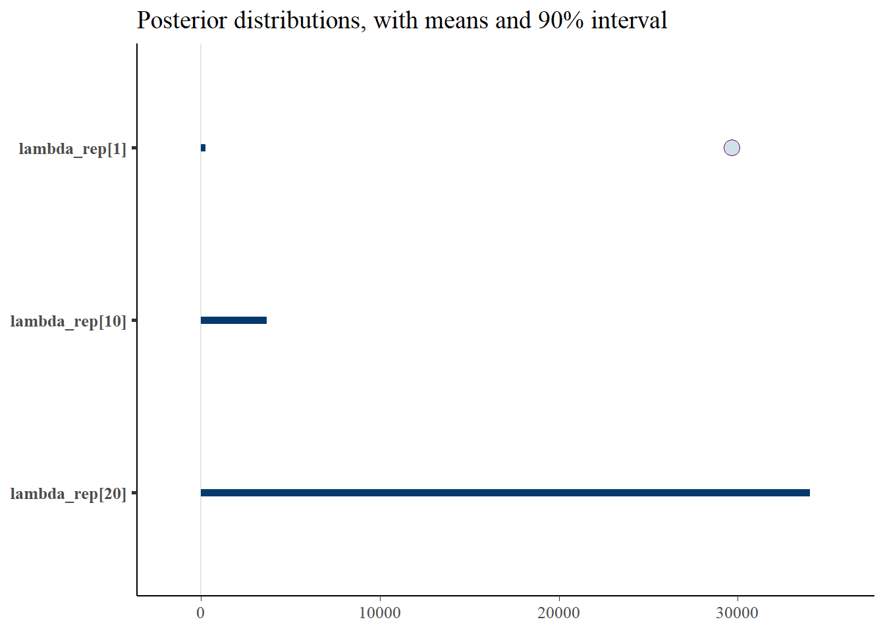
p_post <- mcmc_intervals(fit$draws(), prob = 0.9, point_est="mean", pars = gen_b) + plot_title
print(p_post)Warning: Removed 3 rows containing missing values (`geom_point()`).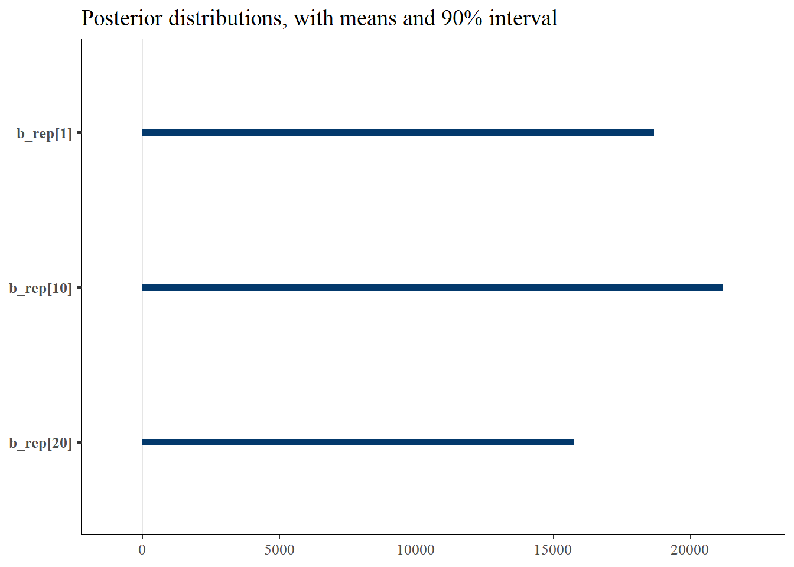
p_post <- mcmc_intervals(fit$draws(), prob = 0.9, point_est="mean", pars = gen_lb) + plot_title
print(p_post)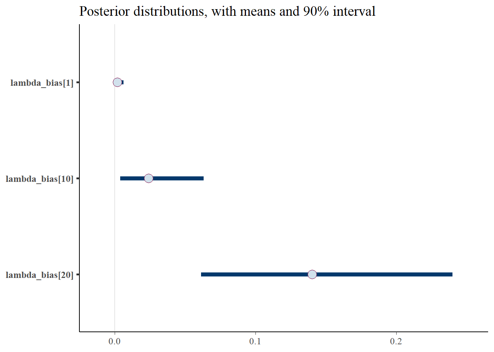
p_post <- mcmc_hist(fit$draws(), pars = gen_lambda)
print(p_post)`stat_bin()` using `bins = 30`. Pick better value with `binwidth`.p_post <- mcmc_hist(fit$draws(), pars = gen_b)
print(p_post)`stat_bin()` using `bins = 30`. Pick better value with `binwidth`.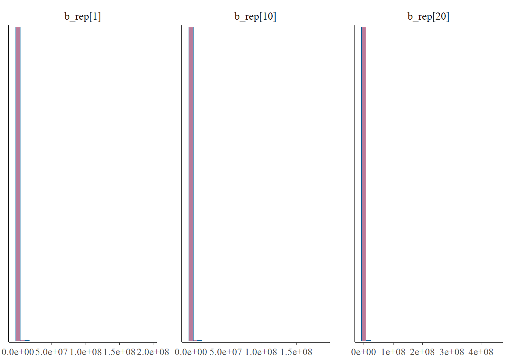
p_post <- mcmc_hist(fit$draws(), pars = gen_lb)
print(p_post)`stat_bin()` using `bins = 30`. Pick better value with `binwidth`.# Look at counts for each site
#gen_y <- c("y_rep[1]", "y_rep[10]", "y_rep[20]")
#p_post <- mcmc_hist(fit$draws(), pars=gen_y)
#print(p_post)From this we notice that the intervals for some of the generated lambdas and biases are wide, but not for the thinned values. But even for those that have wide intervals, nearly all of the chain values in the histograms are the same. This is because it’s only a few values that cause the mean to be biased, due to the correlation of the parameters.
The take away is that the mean for the generated quantities is very skewed by the occassional large value. This high skew is caused by the correlation between b and l, since these parameters are not estimable between themselves. Therefore, we arrive at reasonable estimates for b*l since this is draw specific (where when one is high the other is low), but the overall mean for either b or l over multiple draws cannot be trusted. This is clear from the histograms of \(\lambda\) and the bias, where most of the values take on very low values, but do fluctuate higher. And when one goes higher, the other goes lower, which I’d like to check a specific example of, for one draw.
4.5 Diagnostics
Finally, it is possible to look at a variety of NUTS diagnostics metrics. I am not going to go into much detail here.
nuts_fit <- nuts_params(fit)
mcmc_parcoord(fit$ draws(), np=nuts_fit)mcmc_nuts_divergence(nuts_fit, log_posterior(fit))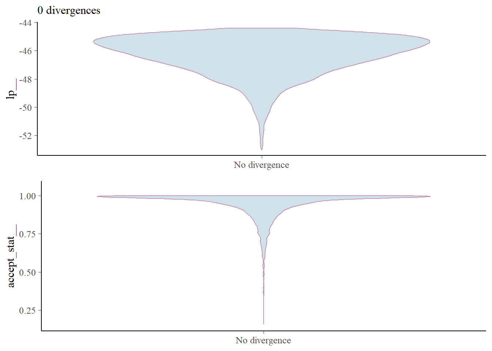
The parcord plot shows 1 line per iteration of the sampler. We can see the values each sampled parameter takes on, which allows us to notice the extent that correlation has on the sampled values. If there are any divergences in the sampling, these will show up in red and help us to pick out the parameters that may be contributing. to this.
There are no divergences so we don’t need to worry.
mcmc_rhat(rhat(fit))Warning: Dropped 12 NAs from 'new_rhat(rhat)'.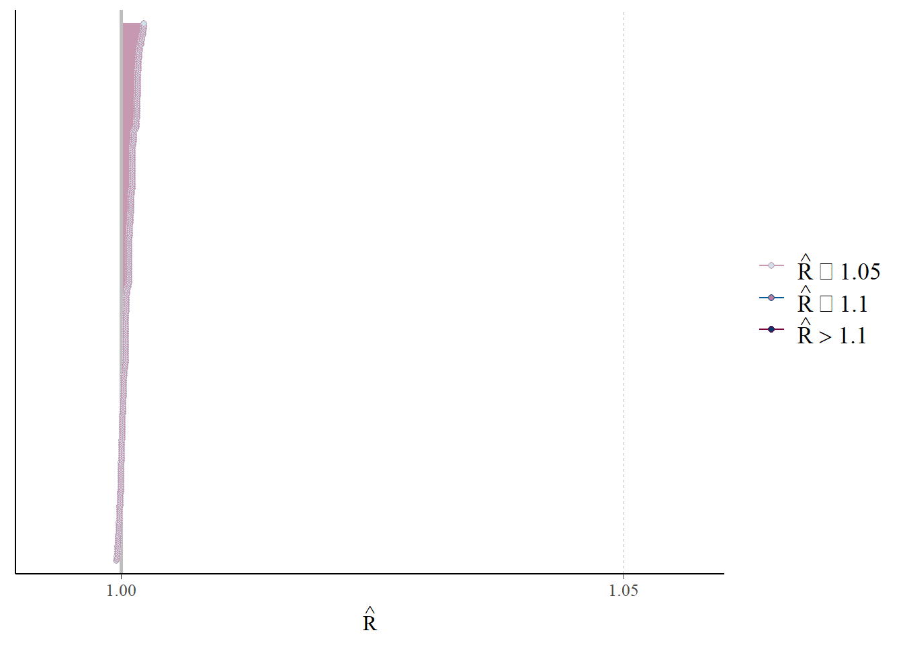
mcmc_neff(neff_ratio(fit))Warning: Dropped 12 NAs from 'new_neff_ratio(ratio)'.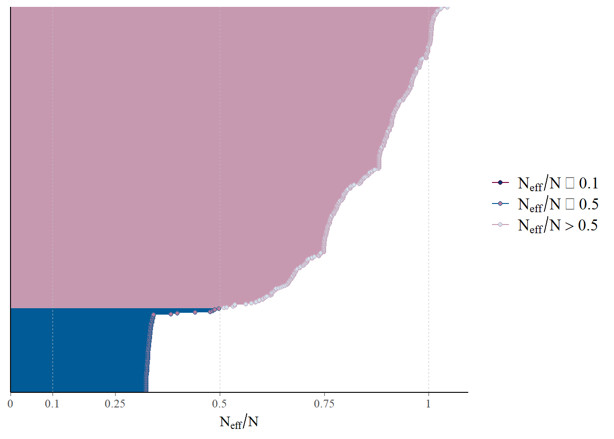
#mcmc_nuts_energy(nuts_fit, binwidth=1/2)
#mcmc_nuts_acceptance(nuts_fit, log_posterior(fit))R hat, which compares between and within chain estimates, looks good.
“neff” is the effective sample size estimates the number of independent samples, after accounting for autocorrelation in the chains. The figure here shows there are a reasonable number of independent samples, though the threshold is somewhat arbitrary.
mcmc_acf(fit$draws(), pars=c('alpha', 'beta', 'gamma', 'delta'))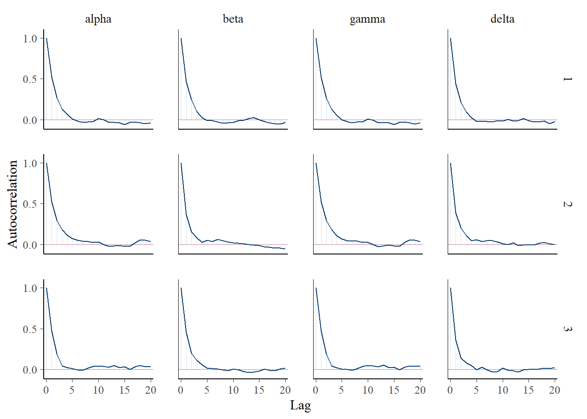
Autocorrelation in the chains looks well-handled.
fit$cmdstan_diagnose()Processing csv files: C:/Users/msavery/AppData/Local/Temp/RtmpI1LWXc/thinned_poisson_process-202404301732-1-989a97.csv, C:/Users/msavery/AppData/Local/Temp/RtmpI1LWXc/thinned_poisson_process-202404301732-2-989a97.csv, C:/Users/msavery/AppData/Local/Temp/RtmpI1LWXc/thinned_poisson_process-202404301732-3-989a97.csv
Checking sampler transitions treedepth.
Treedepth satisfactory for all transitions.
Checking sampler transitions for divergences.
No divergent transitions found.
Checking E-BFMI - sampler transitions HMC potential energy.
E-BFMI satisfactory.
Effective sample size satisfactory.
Split R-hat values satisfactory all parameters.
Processing complete, no problems detected.# Leave loo out.
#loo_results <- fit$loo(variables="lp__", cores=4)
#print(loo_results)It appears we have no additional problems in the models according the the Stan diagnostics.
4.6 LGCP
EDIT FROM HERE: We next move on to incorporating spatial correlation. To do so, we fit a Log Gaussian Cox Process (LGCP). Where before we specified the intensity as \[ \lambda(s) = \theta(s)b(s) = \exp[\alpha + \beta'x(s) + \gamma + \delta'z(s)] \] we now add a Gaussian process to incorporate spatial correlation between sites \[ \lambda(s) = \theta(s)b(s) = \exp[\alpha + \beta'x(s) + \gamma + \delta'z(s) + w(s)] \] so that the expected value for quadrat \(A\) will be the integral over the quadrat: \[ \Delta(A) = \int_A\lambda(s)ds = \int_A \exp[\alpha + \beta'x(s) + \gamma + \delta'z(s) + w(s)]ds \] We make the same approximations as before based on our limited covariate resolution.
While the topic of LGCPs on its own is quite interesting and deserves its own treatment, for now we examine its behavior only as an adjustment to the NHPP. In a future post I will discuss approximations to the LGCP, which are quite important as fitting the spatial correlation matrix is computationally intensive as the number of locations increases. If we want to apply the LGCP to developing optimal designs (another future topic), we will need an approximation.
I proceed with fitting the model in Stan.
model_string <- log_gaussian_cox_process
write(model_string, model_path)
# Here we need to use the distance matrix
data = list(N = sites, X = grid_points$aux_x, Z = grid_points$aux_z, y = sim_data$Y[data_reps,], D = distance_mat)
model <- cmdstan_model(model_path)
lgcp_fit <- model$sample(data=data, seed=13, chains=3, iter_sampling=2000, iter_warmup=200, thin = 10)Having fit the LGCP we can examine the parameters. {r) #| label: lgcp-params #| eval: true lgcp_fit$summary(variables=c('alpha', 'beta', 'gamma', 'delta')) And then we look at the posterior diagnostics.
posterior <- lgcp_fit$draws()
color_scheme_set("mix-blue-pink")
p_trace <- mcmc_trace(posterior, pars = c("alpha", "beta", "gamma", "delta"),
facet_args = list(nrow = 2, labeller = label_parsed))
print(p_trace + facet_text(size = 15))Then look at the posterior intervals
plot_title <- ggtitle(paste("Posterior distributions, with means and 90% interval"))
p_post <- mcmc_areas(posterior, prob = 0.9, point_est="mean", regex_pars = c("alpha", "beta")) + plot_title
print(p_post)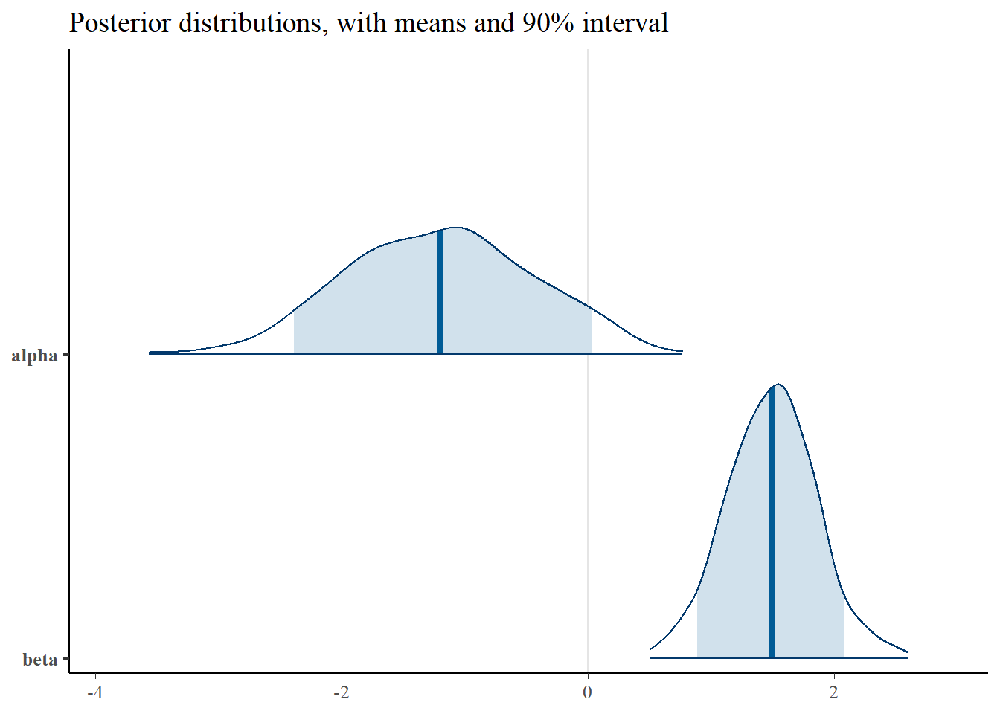
plot_title <- ggtitle(paste("Posterior distributions, with means and 90% interval"))
p_post <- mcmc_areas(posterior, prob = 0.9, point_est="mean", regex_pars = c("gamma", "delta")) + plot_title
print(p_post)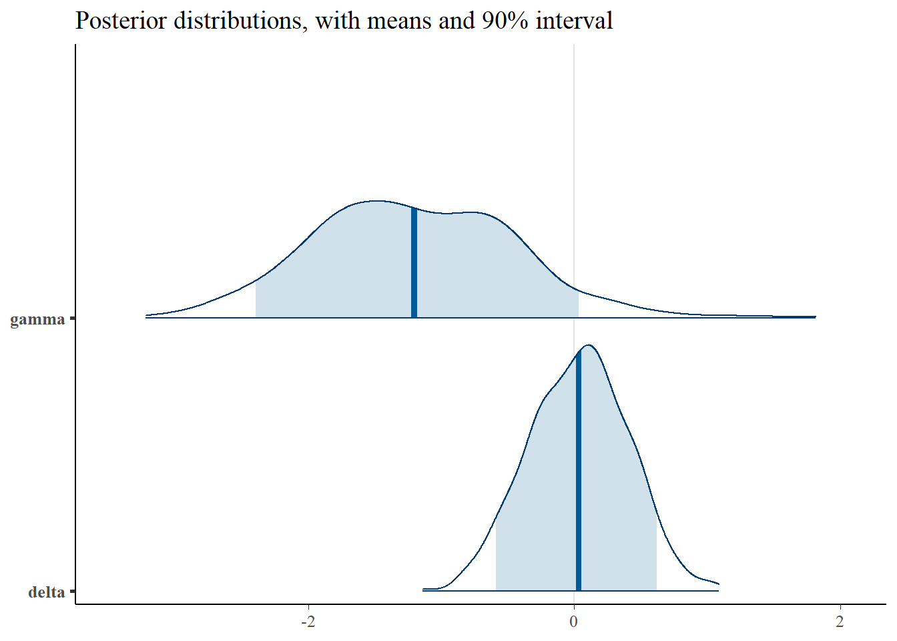
mcmc_intervals(posterior, pars=c('alpha', 'beta', 'gamma', 'delta'))
#mcmc_hist(fit$draws(), pars = c('alpha', 'beta', 'gamma', 'delta'))
plot_title <- ggtitle("Parameter posterior sample correlation")
p_post <- mcmc_pairs(posterior, pars=c('alpha', 'beta', 'gamma', 'delta'))
print(p_post)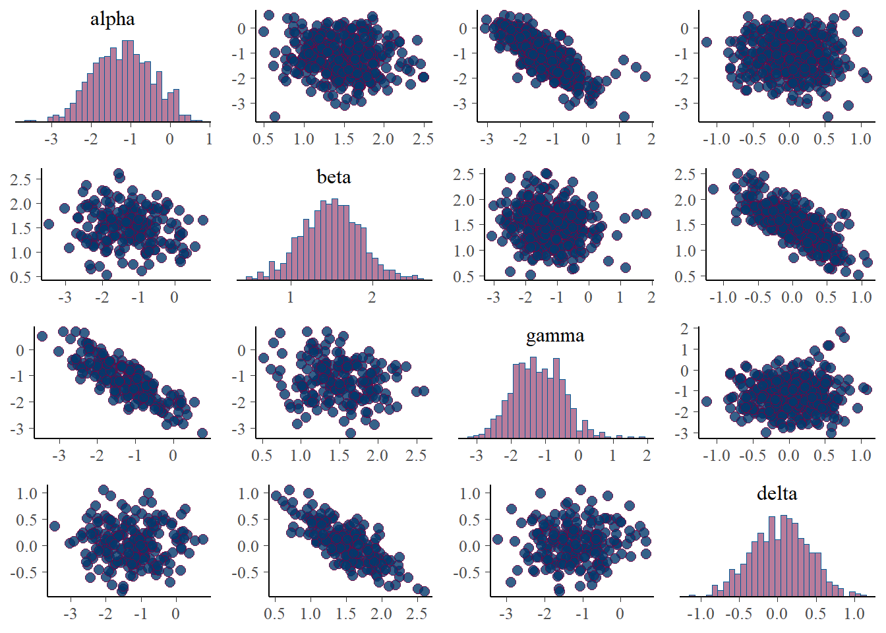
mcmc_scatter(posterior, pars=c('alpha','gamma'))Finally look at the posterior predictions for \(\lambda\), \(b\), and \(\lambda\cdot b\).
generated_vars <- c('lambda_bias', 'lambda_rep', 'b_rep', 'y_rep')
lambda_thinned <- lgcp_fit$summary(variables=generated_vars[1])$mean
lambda_rep <- lgcp_fit$summary(variables=generated_vars[2])$mean
bias_rep <- lgcp_fit$summary(variables=generated_vars[3])$mean
y_ppd <- lgcp_fit$summary(variables=generated_vars[4])$mean
ppd_df <- data.frame(x=grid_points$x, y=grid_points$y, y_rep=y_ppd, lt=lambda_thinned, l=lambda_rep, b=bias_rep)We can then check the generated data:
p <- ggplot(ppd_df, aes(x, y, fill=y_rep)) +
geom_tile() +
scale_fill_viridis(discrete=FALSE) +
ggtitle("PPD counts per site")
print(p)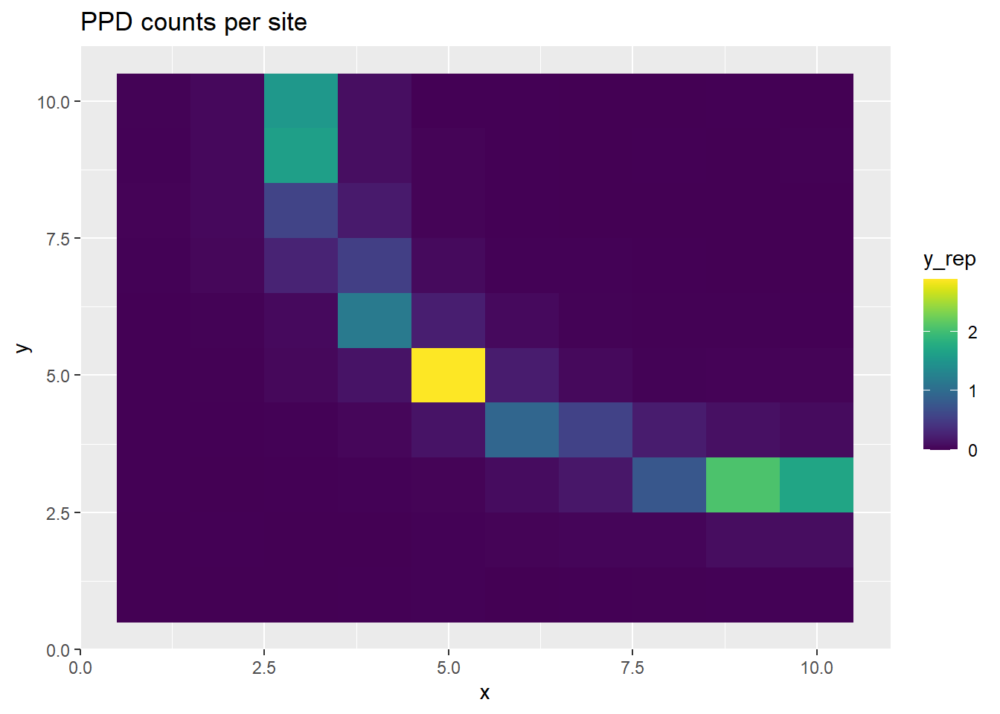
p <- ggplot(ppd_df, aes(x, y, fill=lt)) +
geom_tile() +
scale_fill_viridis(discrete=FALSE) +
ggtitle("Thinned intensity per site")
print(p)p <- ggplot(ppd_df, aes(x, y, fill=l)) +
geom_tile() +
scale_fill_viridis(discrete=FALSE) +
ggtitle("Intensity per site")
print(p)p <- ggplot(ppd_df, aes(x, y, fill=b)) +
geom_tile() +
scale_fill_viridis(discrete=FALSE) +
ggtitle("Bias per site")
print(p)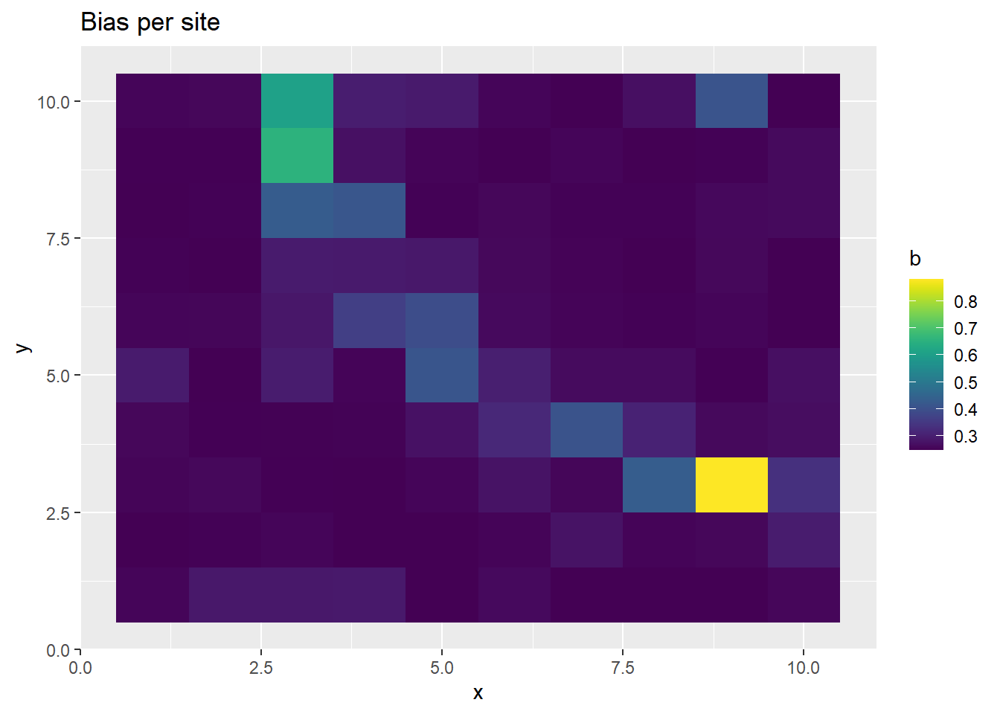